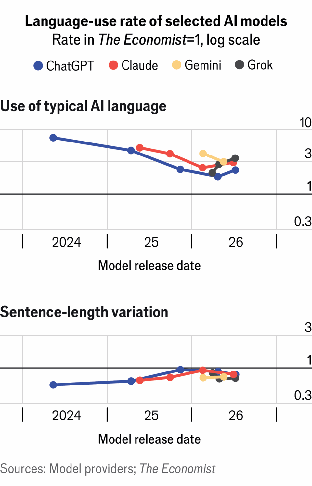
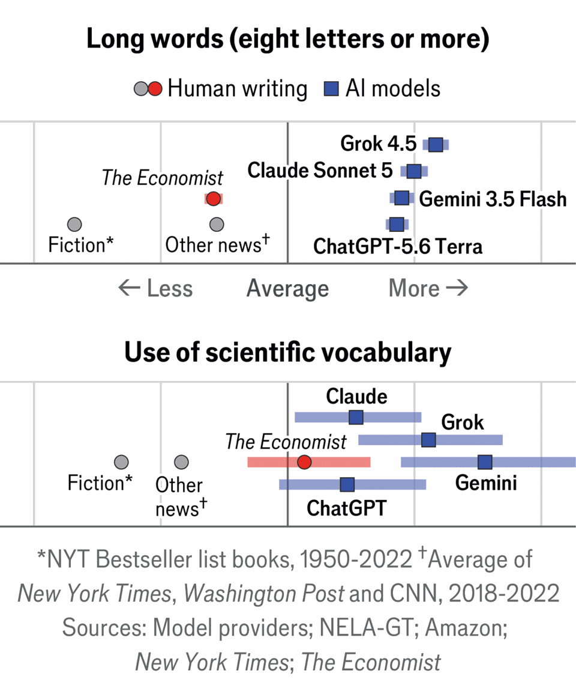
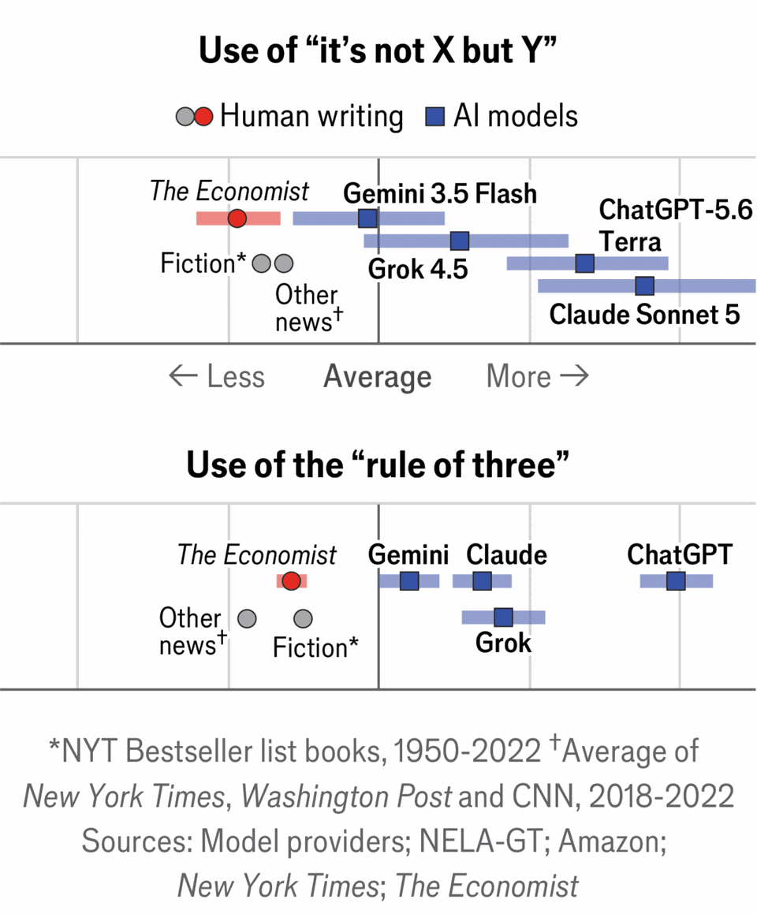
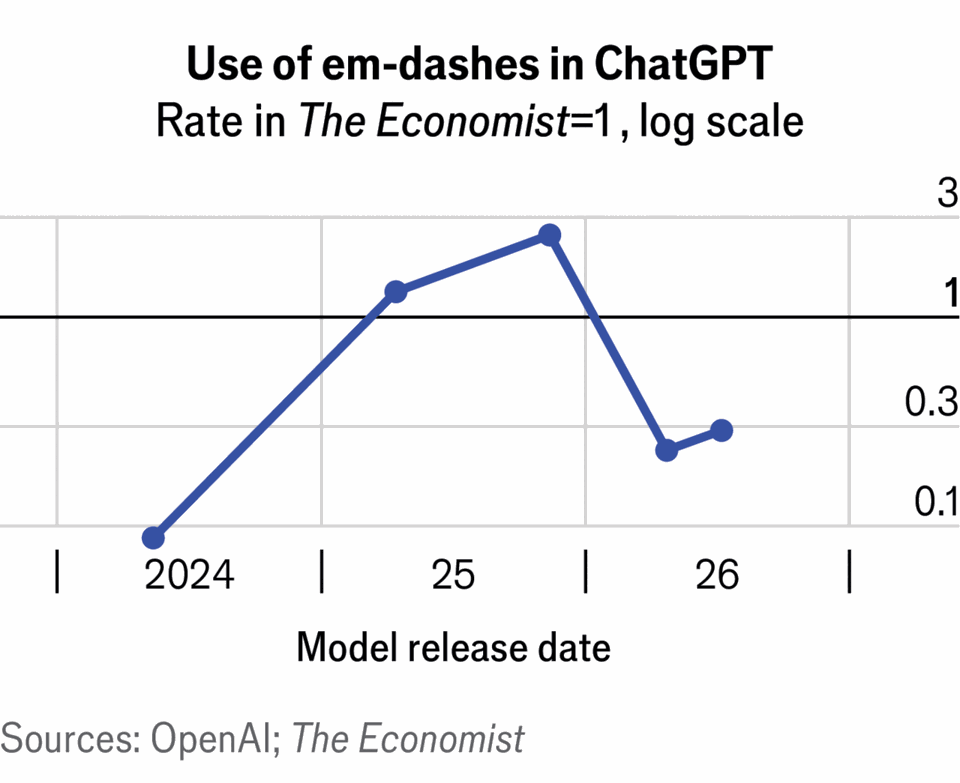

How to spot AI writing
Large language models like long words and em-dashes—or do they?
Jul 30th 2026
A GHOST WRITER is haunting the English language. The linguistic spectre can turn its hand to prose, poetry, journalese and corporate jargon. It is frightfully versatile: you can get it to mimic Shakespeare’s sonnets or a schlocky beach read; Ernest Hemingway’s taut prose or the office-printer manual. It is frightfully fast, churning out thousands of words a minute. (Hemingway rarely produced as many in a day, and required much more booze.) Wordsmiths are spooked.
AI writing is everywhere. It is in your inbox and on your LinkedIn feed. It is all over the internet, drafting more than a third of new websites by one count. Large language models (LLMs) are helping students write essays and probably helping scientists write papers. Some allege AI-generated prose won the Commonwealth Short Story prize this year, with judges praising its “quiet authority”. (The Commonwealth Foundation denied the claim.)
LLMs have stylistic quirks. They are thought to maximise the use of long em-dashes—and the use of words like “maximise”. They like to “deep dive” (and, better yet, “delve”) into the “rich tapestry” of the world. AI writing is not about a single word or phrase, but a rich tapestry of things.
Spotting AI texts can be tricky. This is in part because you need evidence beyond a few words or dashes: claiming that a text is by an LLM because it uses the word “delve” is like claiming one is by Jane Austen because it uses “imprudence”. Bots also write in slightly different ways. There is no single style of AI writing, explains Karolina Rudnicka, a linguist at the University of Gdansk in Poland, just as there is no single style of human writing. Writers have idiosyncrasies—Emily Dickinson, for instance, loved em-dashes—and bots may do, too.
But there are a few ways to identify LLM-generated text. One is to use detection algorithms that are trained to spot the texture of human or AI prose. Pangram, a leading firm, claims to have 99.98% accuracy. (It has partnered with Substack, a blogging platform, on such a tool.) Detectors, however, are black-box algorithms that can give false positives. They do not give reasons for why they reach their conclusions.
Researchers have also tried scouring texts for suspicious words or comparing papers from before and after LLMs were made available to the public. But these approaches have drawbacks too, not least because it is hard to disentangle AI quirks from other language trends.
You can discover AI’s hallmarks by comparing the writing of man and machine. To do this you need a baseline that is distinctive and familiar. The Economist turned to prose that we’re sure is human and that readers will recognise: our own. We designed a study to ask top LLMs—OpenAI’s ChatGPT, Anthropic’s Claude, Google’s Gemini and xAI’s Grok—to write versions of our articles without consulting the web. (As a prompt, we gave them the AI-generated summaries that we have experimentally added to some of our articles.)
This gave us a corpus of human and AI creations and we compared them across 55,940 sentences and 1.2m words. To make sure we were detecting AI quirks rather than our own, we also checked the AI texts against journalism from CNN, the New York Times and the Washington Post. Excerpts from hit novels published between 1950 and 2022 offered another test.
Our findings are surprising. AI prose is distinguishable by word and punctuation choice as well as sentence and paragraph structure. But its hallmarks are not what you might expect, partly because its writing style has changed with software updates. That does not mean that LLMs are great writers: their prose lacks lucidity and elegance and is often formulaic. So those aspiring to be impressive (human) storytellers should avoid the following peculiarities in their own prose.

First, consider words. The vocabulary that bots overuse has changed: they no longer “delve” and there are not as many “tapestries”. Instead they offer a significant number of polysyllables like “significant”, “increasingly” and “consequences”. They use more rare words (“interdependence”, “reindustrialisation”) and scientific lingo (“parameter”, “methodology”) than humans, and are fond of nominalisations (making nouns from verbs, such as “expansion” from “expand”). All the LLMs in our study use such words, but particularly Gemini and Claude.

Much of this language could be described as what George Orwell called “pretentious diction”. He railed against writers who “dress up simple statements” with complicated words and jargon to sound clever. Such pontificating penmen, Orwell observed, also believe that “Latin or Greek words are grander than Saxon ones”. (Bots agree: more Latinate suffixes crop up in their writing than in human texts.)
Then look at punctuation. Many believe LLMs stuff their prose with em-dashes, but that is not true after the most recent updates. Today only Claude uses more em-dashes than human writers, with ChatGPT using markedly fewer than any other writer in our study. Humans rejoice—and start using dashes again.
A better way to spot AI-generated writing would be to look for texts without much punctuation at all. LLMs are very Joycean about it: they use fewer commas and semicolons than humans (and hardly any parentheses). They use less punctuation in part because they write longer sentences—“and” is their most overused word—and in part because they do not quote experts.

Finally, study the sentence. Bots’ sentences tend to be long; paragraphs are rarely interrupted with short, punchy statements. How dull. When LLMs want to make their sentences more lively, they often reach for a rhetorical device. Their favourites include: “not X but Y”, “not only but also” and the “rule of three”. (Grouping ideas in threes makes them more engaging, as we did just then.) ChatGPT and Claude use more of these constructions per 1,000 sentences than other LLMs and humans.

So if you want to spot AI writing, look for bland, pretentious prose lavished with Latinate words—at least for now. With every update, our study shows, AI writing is becoming more similar to human prose. Pangram successfully detected AI-generated copy, but may struggle in future. LLMs are trained on human writing and learn from human feedback, notes Tommie Juzek of Florida State University, picking up things people find impressive and dropping things they do not.
Bots learn fast, too. Take ChatGPT: until very recently it used an em-dash in almost every sentence. When your correspondent asked an older model whether it thought AI overused the dash, it said: “Ha—great question!” Ask the bot the same thing today and it soberly says “they’re best used sparingly.” Only a ghost could shapeshift so quickly. ■